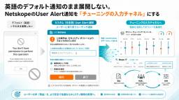

CloudNative BLOGs
https://blog.cloudnative.co.jp
株式会社クラウドネイティブの技術ブログ。ゼロトラスト、SaaS、AI、セキュリティなどの最新情報をお届けします。
フィード

times批判は根本的に正しい。ではなぜ当社の「times文化」が壊れないのか 3
3
CloudNative BLOGs
X上で燃えた「timesにお気持ちを書くな」論争。批判は正しいのにも関わらず、創業時から稼働しているtimes文化が壊れないクラウドネイティブの構造を、Slackアナリティクスの実数とAI日次レポートの運用実態から分析します。
1日前

【Entra ID】GPO・ACL の知識は、どこまで通じるか｜前編・条件付きアクセスを並べて読み替える 1
CloudNative BLOGs
Entra ID 条件付きアクセスを GPO・ファイアウォール ACL・Okta のアプリサインインポリシーと比較し、後勝ちや暗黙の deny が通用しない理由と、未想定 OS を塞ぐ設計の勘所を解説します。オンプレからクラウドへ移る情シスの方向けです。
1日前

情シスの経験は、PMの現場で武器になる
CloudNative BLOGs
情シス経験がPM業務で武器になる理由を、社内調整・会議準備・導入後の定着・スコープ管理・トリアージなど具体例で解説し、転身を考える方のヒントを示します。
1日前

Exchange OnlineのEWSがいよいよ廃止へ、10月の強制無効化前に8月末までにやっておくこと
CloudNative BLOGs
Exchange OnlineのEWS廃止に備え、2026年10月の強制無効化を回避するための調査方法と設定手順、許可リスト作成の注意点を解説します。
2日前

英語のデフォルト通知のまま展開しない。NetskopeのUser Alert通知を「チューニングの入力チャネル」にする
CloudNative BLOGs
NetskopeのUser Alert通知をデフォルト英語のまま出さず、日本語テンプレートで理由入力・誤検知報告を組み込み、Skope ITのログから根拠を集めてポリシーチューニングを回す手順を解説します。
3日前

【アンサー】ゼロトラストはキツくない。「ゼロトラストの完成」を目指す運用がキツい
CloudNative BLOGs
社員が書いた「AI時代のゼロトラストがキツい件」への社長アンサー記事です。ゼロトラストの原則は崩れておらず、キツいのは「完成」を目指し人間の速度で検証ループを回す運用のほう。デセプションと復旧の順序、経営として何を捨てるかに答えを出します。
3日前

AI時代のゼロトラストがキツい件について 2
CloudNative BLOGs
AIが自律的に攻撃側へ回り始めた2026年、ゼロトラストを支えてきた前提を問い直します。OpenAIとHugging Faceのインシデントを起点に、サイバーデセプションと復旧全振り（レジリエンス）の現実性、予算再配分の考え方を情シス・CISO向けに整理します。
3日前


非エンジニアの新米PMがPMBOKを学んでみた
CloudNative BLOGs
「PMBOKって分厚くて難しそう」と身構えている新米PMへ。学び始めた非エンジニアの目線で、PMBOKは「手順書」ではなく「ガイド」だと整理します。PMI自身がそう言っています。丸暗記して従うのではなく、自分のプロジェクトに合わせて選んで使えばいいと分かります。
8日前
正規表現は不要！ Netskope DLPでマイナンバー検知
CloudNative BLOGs
Netskope DLPでマイナンバー（個人番号・法人番号）を正規表現なしで検知する方法を、事前定義識別子の選び方とDLPルール設定手順、AND/OR演算子の落とし穴を交えて解説します。
9日前
OneDriveの同期をGUIDで制限したら、macOSは素通りだった話
CloudNative BLOGs
OneDrive同期をADドメインGUIDで制限してもmacOSは既定でブロックされない点を解説し、SharePoint OnlineのBlockMacSync設定をPowerShellで適用・確認する手順を紹介します。
9日前
クラウドネイティブのイベントレポ #1
CloudNative BLOGs
2026年7月29日にPASONA SQUAREで開催した、パソナ様・マネーフォワードi様との3社共催セミナー「【情シスの本音トーク】AI活用、導入の壁と越え方」のレポートです。各社セッションの内容や、代表シンジによる「Claude Codeを組織で安全に配布する」の登壇内容をまとめました。
9日前
Claude Apps Gatewayとは何か｜「開発者ごとにクラウドの鍵を配る」運用を終わらせる自社ホスト型コントロールプレーン 2026
CloudNative BLOGs
Anthropicが2026年6月29日に公開したClaude Apps Gatewayは、Claude CodeのSSO認証・ポリシー強制・コスト上限・テレメトリを自社ホストで一元化するコントロールプレーンです。Bedrock/Vertex経由利用の統制ギャップ、導入判断、確認ポイントを情シス・セキュリティ目線で解説します。
9日前
未使用のUPSIDERバーチャルカードが不正利用されたそのロジック
CloudNative BLOGs
未使用のまま一度も決済していない法人バーチャルカードが不正利用された事例をもとに、番号盗用の実態、BINとLuhnで縮む探索空間、分散推測攻撃の仕組みをVisaやFCAの一次情報で整理し、未使用カードのロックや利用先限定など実務の打ち手までを解説します。
9日前
自社サービスの認証基盤、何で作る？フレームワーク・ライブラリ・認証サーバー自社運用・CIAMサービスの選び方【2026】
CloudNative BLOGs
顧客向けサービスの認証基盤の実現方法（フレームワーク・ライブラリの認証機能／認証サーバーの自社運用／Auth0などのCIAMサービス）を並列に整理し、優劣ではなく自社の要件に当てて選ぶための判断軸をPM視点で解説します。
9日前
Keeper管理者アカウント運用復旧不能リスクにどう備え、特権IDをどう設計するか
CloudNative BLOGs
Keeperの管理者アカウント運用を、復旧不能リスクを避けるための4観点で解説します。
10日前
Microsoft Top Partner Engineer Award 2026 受賞者に聞く、エンドポイントセキュリティ支援の現場力
CloudNative BLOGs
Microsoft Top Partner Engineer Award 2026 を受賞したエンジニアの辻󠄀に、受賞の背景や、Intune・Entra ID を中心としたエンドポイントセキュリティ支援で大切にしていることを聞きました。
11日前
スクラムマスター研修を受けてみてのリアルなまとめ
CloudNative BLOGs
スクラムマスター研修を2日間受講した記録です。透明性・検査・適応の3本柱と5つの価値基準、完成の定義と受け入れ基準の違い、スプリントやデイリースクラムの進め方まで、スクラムガイド2020と照らし合わせながら学びを整理しています。
11日前
KQLをUIでサクッと生成するツールでいつもの調査を楽にした話
CloudNative BLOGs
Microsoft SentinelでのAWS CloudTrail調査KQLを、フォーム入力で生成する単一HTMLツールを自作した話です。UTC変換ミスの防止、実績ベースのプリセット設計、自社環境に合わせた作り方の勘所を、失敗談込みで紹介します。
11日前
「作業」はAIに、「解釈と配慮」は人に。なんとなくを無くす議事録のつくり方
CloudNative BLOGs
アジェンダ整備と5項目テンプレートで土台を作り、Notion AI Meetingで文字起こし・要約、Notion AIで清書。AIが作業を担い人が温度感や意思決定経緯を加えるハイブリッド議事録作成法を、クラウドネイティブのアシスタントチーム向けに解説します。
12日前
ホテルWi-Fiが偽のM365ログイン画面を返す日｜設定の見直しで攻撃の成功率を下げる
CloudNative BLOGs
ホテルや会議場のWi-Fiゲートウェイが侵害され、DNSポイズニングで偽のMicrosoft 365ログインページへ誘導される攻撃が2026年6月以降続いています。スプリットトンネルVPN・WPAD・デバイスコードフローの棚卸しなど、情シスが出張端末を守るための実務を解説します。
12日前
チームがうまく回らないのは自分のせいかもしれない｜トヨタの「自工程完結」「後工程はお客様」で考えてみる
CloudNative BLOGs
自分の担当分は終わったはずなのに、渡した相手から質問が返ってくる。トヨタの「自工程完結」は、この状態を「不良を後工程に流した」と呼びます。不良を後工程に流さないことと、前工程から流れてきた不備をフィードバックして直してもらうこと。前工程・自工程・後工程という見方を普段の仕事に置き換えてみました。
12日前
Netskopeでアクティビティ検知の有効化申請が必要な場合がある
CloudNative BLOGs
Netskopeの一部クラウドアプリでアクティビティ検知がデフォルト無効となり、サポートへの有効化申請が必要なケースと手順、対象アプリ例、申請後の確認方法を解説し、運用担当者やセキュリティチームの方に役立つ情報を提供します。
13日前
Boxの所有者が無効になるとフォルダが見えなくなる
CloudNative BLOGs
Boxで所有者アカウントを無効化するとフォルダが見えなくなる仕様と、Business Plus以上で利用できる「Inactive User Content Availability」機能の概要、対策と活用方法を解説し、管理者やIT担当者に役立つ情報を提供します。
13日前
Defender for Cloud Appsのファイルポリシーは2027年1月6日に廃止｜Purview DLP移行で消える機能・残る機能を先に知る
CloudNative BLOGs
Microsoft Defender for Cloud Appsのファイルポリシーは2027年1月6日に廃止されます。SharePoint・OneDriveに加えBox・Google Workspace等のDLPも対象。Purview移行で失われる機能、ライセンス要件、棚卸しと移行手順を一次情報・二次情報に基づき整理します。
13日前
#AIDevDay 2026 に参加してきました！
CloudNative BLOGs
AI Dev Day 2026にスポンサーとして参加したレポートです。ブースでのフィギュア無料配布の様子や、代表シンジによる登壇「Claude Codeを企業利用するときのベストプラクティス」の内容、講演資料、7/29開催の関連イベント情報をまとめました。
15日前
Intune で Netskope Client を一括アンインストールする方法
CloudNative BLOGs
Intune の Win32 アプリを使って、Windows 端末から Netskope Client を一括アンインストールする方法を解説します。スクリプトのダウンロードから intunewin 化、Intune への登録、動作確認までの手順をまとめました。
15日前
フルリモートの入社初日ってどんな感じ？
CloudNative BLOGs
フルリモートで入社した初日の流れと1週間のオンボーディングを、PCセットアップやNotion・Slack活用、各チームの顔合わせや質問対応方法など具体的に紹介し、新入社員が安心して業務を始められるポイントを解説する記事です
15日前
AI-DLCとは？非エンジニアのPMが「AI駆動開発ライフサイクル」をかみ砕いてみた
CloudNative BLOGs
AI-DLC（AI駆動開発ライフサイクル）とは何かを、非エンジニアのPM目線でかみ砕いて解説します。AWSが提唱したこの方法論では「作る速さ」より「合意の速さ」が鍵になり、上流工程の会議こそ変わります。3つのフェーズとモブワークもやさしく紹介します。
16日前
クラウドネイティブに入社しました！ オンプレミスからクラウドへ
CloudNative BLOGs
インフラ／サーバーエンジニア出身の柳原海士が、クラウドネイティブの Identity チームに入社。これまでのキャリア、オンプレからクラウドへ移りたかった入社の経緯、Identity／セキュリティ領域で挑戦したいことを整理しました。
16日前
計上漏れも二重計上も原因は同じ。請求明細を目視でなく仕組みで守る
CloudNative BLOGs
1枚の請求書を明細ごとに複数の仕訳へ分けて計上していると、特定の行が消えたり二重に載ったりします。計上漏れも二重計上も原因は同じ「行の同一性を人の目で判断していること」。一意キー・差分・見張りの3点で、目視チェックを手元のExcelでできる仕組みに置き換える方法を解説します。
16日前
クラウドネイティブの顧客質問対応（ask運用）と仕組みについて
CloudNative BLOGs
本記事は、クラウドネイティブのAsk運用とDevチームが提供する質問受付・振り分け・回答・ナレッジ化の仕組みを解説し、アシスタントチームが毎朝のデイリーミーティングで迅速に担当を決定し、質問を確実に解決できる方法を紹介します。
17日前
Intuneでのワイプ・リタイヤ・削除の違いを【情シスに必要な範囲で】深掘る
CloudNative BLOGs
Intuneでのデバイス管理時に使う「ワイプ」「リタイヤ」「削除」の挙動と適用シーンを、所有形態別に解説し、情シス担当者が適切に選択できるよう支援します。
17日前
Google Workspaceのセキュリティはプランで決まる｜要件別のエディション選び
CloudNative BLOGs
Google Workspace のエディション別セキュリティ機能を整理し、要件から最適なプラン選定や見直し手順をIT 管理者向けに解説します。
17日前
勝手に立てたAI基盤に、クラウドの鍵が埋まっている｜Langflow脆弱性に学ぶシャドーAI統制
CloudNative BLOGs
Langflow CVE-2026-55255（IDOR）の実悪用がCISA KEVに登録されました。AIワークフロー基盤に埋め込まれた認証情報が狙われる構造と、シャドーAI基盤の発見・台帳化、シークレット外部化、オーナー不在対策を情シス視点で整理します。
19日前
Fabel 5やGPT5.6のようなAIの賢さより、権利無視のKimi K3という中国AIの脅威
CloudNative BLOGs
2026年7月16日リリースの中国製AI「Kimi K3」を、ベンチマークではなく「ガードレールの緩さ」の視点で検証します。macOS 27クローンのデモやK2.5の独立安全性評価、規制の非対称が企業のAI利用と統制設計に何を求めるかを整理します。
21日前
2026年07月版 TypeWhisperとローカルLLMで日本語音声入力（TypeWisper x Whisper Large V3 Turbo × Qwen3-32b）
CloudNative BLOGs
Whisper Large V3 Turbo（WhisperKit経由）とQwen3-32b（Ollama経由）を組み合わせ、すべての処理をMac上で完結させる完全ローカルの日本語音声入力環境を構築します。クラウドへ一切送信せず、APIキーなし、月額課金なしで高精度なディクテーションを実現する手順を、セットアップから競合比較まで解説します。
23日前
【IT投資は「福利厚生」にもなり得る】情シス出身の私が使う側に回って気づいたこと
CloudNative BLOGs
IT基盤への投資を福利厚生視点で捉え、AI検索やNotion・Slack活用による情報アクセスの快適化が従業員体験と生産性向上にどう寄与するかを、情シス担当者や経営層向けに解説します。
1ヶ月前
PMが娘のランドセル選びで学んだこと｜隠れた本音の見つけ方と、対立を着地させる合意形成
CloudNative BLOGs
娘のランドセル選びは、一見シンプルなのにちゃぶ台返しが大量に潜む調達プロジェクトでした。丸3ヶ月の泥沼、「6年間使うから」という要件の裏に隠れた本音、そして合意形成に使った5つの手を、PM目線で振り返ります。
1ヶ月前
読み取りはAIに、確定は人に——経理が引いた一本の線
CloudNative BLOGs
経理にAIを取り入れるとき最初に悩むのは「どこまで任せるか」。請求書処理を読み取りと確定に分け、読み取りはAI・最終承認は人と線を引いた実体験から、任せた範囲と承認した範囲を明示することがそのまま内部統制になる、という考え方を紹介します。
1ヶ月前
「パスキーにしたのに破られた」その手法。Vaultjacking／パスキー登録ヴィッシングに学ぶセキュアなパスキー設計
CloudNative BLOGs
パスキーが攻撃されています。その手法を学び、組織のパスキーをセキュアにする方法を学びましょう。Vaultjackingの同期層攻撃、O-UNC-066のEntra登録ヴィッシング、Google Cloud Authenticatorの構造を一次情報で整理し、情シスの設計・監視の要点を解説します。
1ヶ月前